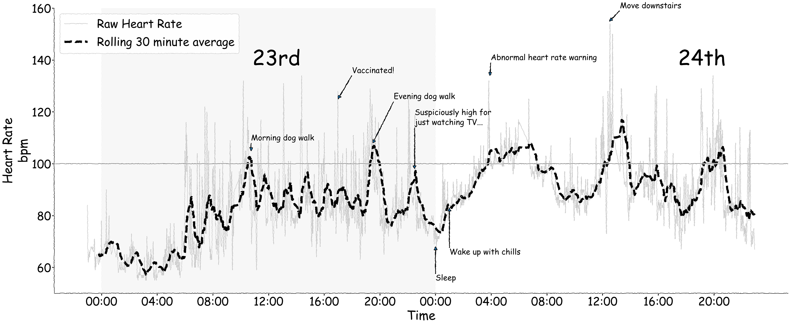

# Imports
import pandas as pd
import seaborn as sns
import matplotlib.pyplot as pltCOVID-19 Vaccine Side Effects — a rough night, in data
Python
data viz
matplotlib
Extracting heart-rate data from a smartwatch after a vaccine-induced bad night, and plotting it in xkcd style.
In April 2021 I got my first COVID-19 vaccination. The side effects were pretty hard going — for about 24 hours I was laid out, and woke up in the middle of the night to my smart watch giving me an “extreme heart rate warning”, which is just the kind of thing you want to see after getting injected with a vaccine for a virus sweeping the globe.
Once I felt more alive, I had the idea of extracting the heart rate data from my watch. As it turns out, there is an excellent Python package, fitparse, that allows the parsing of the .FIT files from Fitbit watches. I won’t post the raw data here and the associated code, but it was pretty simple to get a few days’ worth of data from the watch and plot it. Easy to see how bad things were — which made me extremely grateful for getting vaccinated and not the real thing.
I’m posting this because the plot took a little while to do, and has some functions I don’t use often and am always looking up. The trickiest part was adding annotations to the x-axis — because it’s a datetime object, positions need to be expressed as datetimes too. This took some creativity to make a readable attempt: while annotate gives flexibility in how you specify the text locations, raw data coordinates are the easiest approach, and the raw string representation of dates messes up the temporal ordering of the plot.
# Data preprocessing
hr = (pd.read_csv('https://raw.githubusercontent.com/alexjonesphd/alexjonesphd.github.io/master/assets/covid/vaccination_experience.csv')
.assign(date=lambda x: pd.to_datetime(x['timestamp'], format='%Y-%m-%d'))
.sort_values(by='date')
.dropna(subset='heart_rate', how='any')
.query('heart_rate > 50')
.assign(rolling_30=lambda x: x['heart_rate'].rolling(30).mean())
.reset_index(drop=True)
)
hr.head()| timestamp | stress_level | heart_rate | date | rolling_30 | |
|---|---|---|---|---|---|
| 0 | 2021-04-22 23:00:00 | 30 | 84.0 | 2021-04-22 23:00:00 | NaN |
| 1 | 2021-04-22 23:01:00 | 21 | 68.0 | 2021-04-22 23:01:00 | NaN |
| 2 | 2021-04-22 23:02:00 | 18 | 67.0 | 2021-04-22 23:02:00 | NaN |
| 3 | 2021-04-22 23:03:00 | 19 | 63.0 | 2021-04-22 23:03:00 | NaN |
| 4 | 2021-04-22 23:04:00 | 15 | 62.0 | 2021-04-22 23:04:00 | NaN |
There were also a bunch of things that happened I want to annotate on the plot, so first I’ll make a dictionary containing them along with their associated time points and my heart rate at the time (I worked backwards from the plot to figure these out, but it makes the code tidier to include here). These will be used as coordinates for the annotate method of an axis object.
# Event log dictionary, using datetime spec for X locations - the strings will need parsing into datetimes
# Format follows XX, YY...
events = {'Morning dog walk': [('2021-04-23 10:45', 105), ('2021-04-23 10:45', 109)],
'Vaccinated!': [('2021-04-23 17', 125), ('2021-04-23 18', 135)],
'Evening dog walk': [('2021-04-23 19:30', 108), ('2021-04-23 21', 125)],
'Suspiciously high for\njust watching TV...': [('2021-04-23 22:30', 98), ('2021-04-23 22:30', 115)],
'Sleep': [('2021-04-24 00', 68), ('2021-04-24 00', 55)],
'Wake up with chills': [('2021-04-24 01', 83), ('2021-04-24 01', 65)],
'Abnormal heart rate warning': [('2021-04-24 03:55', 134), ('2021-04-24 03:58', 140)],
'Move downstairs': [('2021-04-24 12:30', 155), ('2021-04-24 13:15', 160)]
}Plot and annotate some of the events of the 24 hours and what I was doing, and do it in xkcd style.
Vaccines are great, and having a heart rate over 150bpm just walking down the stairs is worth it.
# Set up plotting context, style, and fig/ax
sns.set_context('poster', font_scale=2)
with plt.xkcd(scale=0.9, length=100, randomness=200):
# Fig/axis
fig, ax = plt.subplots(1, 1, figsize=(50, 20))
sns.despine(fig) # Turn off up/right axis
# Plot both raw and rolling lines separately for easier control
sns.lineplot(data=hr, ax=ax,
x='date', y='heart_rate',
alpha=.2, color='black',
label='Raw Heart Rate')
sns.lineplot(data=hr, ax=ax,
x='date', y='rolling_30',
color='black', linestyle='--',
linewidth=8,
label='Rolling 30 minute average')
# Add a horizontal line at 100bpm, shift legend, add a shaded block for the 23rd, annotate the 23rd/24th
ax.axhline(100, color='black', alpha=.5)
ax.legend(loc='upper left')
ax.axvspan('2021-04-23 00:00:00', '2021-04-24 00:00:00', color='silver', alpha=.05)
ax.text(.27, .80, '23rd', transform=ax.transAxes, fontsize=80)
ax.text(.85, .80, '24th', transform=ax.transAxes, fontsize=80)
# Add the annotations - the X coord needs converting to datetime
for event, time in events.items():
# Convert the first element - cleanest way I could think of
time_ = [(pd.to_datetime(t[0]), t[1]) for t in time]
# Add annotation
ax.annotate(event, *time_, arrowprops={'width': 1}, fontsize=30)
# Clean up axes, setting an x tick every four hours in date-time format, then relabelling
ax.set(ylabel='Heart Rate\nbpm', xlabel='Time', ylim=(50, 160),
xticks=[f'2021-04-{d} {h:02}:00:00' for d in [23, 24] for h in [0, 4, 8, 12, 16, 20]],
xticklabels=[f'{x:02}:00' for x in [0, 4, 8, 12, 16, 20]]*2)